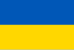
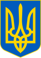

Украї́на — держава у Східній та частково Центральній Європі. Охоплює південний захід Східноєвропейської
рівнини, частину Східних Карпат і Кримські гори. Межує з Румунією й Молдовою на південному заході, з
Угорщиною, Словаччиною та Польщею на заході, з Білоруссю на півночі та з Росією на сході й північному
сході. На півдні омивається Чорним та Азовським морями. Площа становить 603 700 км². Найбільша за площею
країна серед повністю розташованих у Європі.


Станом на перепис 2001 року, населення України становило 48,4 мільйона осіб. Основне й корінне
населення України — українці (77,8 % населення на 2001 рік). Також офіційно корінними
народами України є кримські татари, караїми та кримчаки. Крім того, значною меншиною є росіяни (17,3 %
населення на 2001 рік). Історично однією з найбільших меншин в Україні були також українські євреї.
Сучасна Україна, обравши за свій герб знак княжої держави Володимира Великого, проводить свою
державність від Русі київських князів династії Рюриковичів IX—XIII століть. За часів свого розквіту,
у X—XI століттях, Русь була однією з найбільших і найвпливовіших країн Європи. Після монгольської
навали спадкоємцем Русі стало Королівство Руське XIII—XIV століть, що згодом було поглинуте Великим
князівством Литовським і Королівством Польським. Велике князівство Литовське стало фактичним
продовжувачем традицій Русі, у його складі руські землі користувалися широкою автономією. Після
об'єднання литовської та польської держав у 1569 році, більшість українських земель перебувало у складі
федеративної Речі Посполитої.
Відновлення української державності відбулося під час великого козацького повстання, відомого як
Хмельниччина, з 1648 року, наслідком якого стало утворення автономної козацької держави,
Гетьманщини, або Війська Запорозького. Обмежену автономність Гетьманщина зберігала до 1764 року, при
тому частина земель відійшла до Речі Посполитої, а інша частина знаходилася під протекторатом
Московського царства, які поступово поглинули козацьку державу. Згодом українські землі були розділені
між Російською імперією та Австро-Угорською монархією.
Державою кримських татар, одного з корінних народів України, був Кримський ханат, що існував на
південних українських землях у 1441—1783 роках за правління династії Ґіреїв. У 1783 році був анексований
Російською імперією.
Під час української революції початку XX століття на українських землях постало декілька національних
держав, перш за все Українська Народна Республіка (УНР, 1917—1921), а також Кримська Народна Республіка
(1917—1918), Українська Держава (1918), Західноукраїнська Народна Республіка (1918—1919) та Кубанська
Народна Республіка (1918—1920). УНР наближалася до об'єднання у своєму складі усіх зазначених
держав, але внаслідок низки воєн була загарбана сусідами: Радянською Росією, Польською Республікою,
Румунським королівством і Чехословацькою Республікою.
З 1919 року, спочатку на східних українських землях зі столицею у Харкові, почала створюватися
більшовицька Українська Соціалістична Радянська Республіка (УСРР, згодом УРСР), яка в 1922 році ввійшла
до складу Радянського Союзу. Київ став столицею УРСР у 1934 році. Під час Другої світової війни до УРСР
були приєднані частина Західної України й Буджак, згодом Закарпаття, а з 1954 року — Крим.
Сучасна держава Україна відновила незалежність внаслідок розпаду Радянського Союзу й проголошення
незалежності 24 серпня 1991 року, яке закріпив референдум 1 грудня 1991 року.
Україна є унітарною державою, складається з 24 областей, Автономної Республіки Крим і двох міст зі
спеціальним статусом: Києва — столиці й найбільшого міста, і Севастополя.
Україна є парламентсько-президентською республікою. Органом законодавчої влади є Верховна Рада України,
яка призначає вищий орган виконавчої влади — Кабінет Міністрів України, що очолюється Прем'єр-міністром.
Головою держави та Верховним Головнокомандувачем є Президент України.
Більшість громадян України є християнами, переважно православного віросповідання, також на заході
України поширений греко-католицизм. Релігіями корінних народів України є також іслам, юдаїзм і
караїмізм. До прийняття християнства Руссю в 988 році панівною була язичницька слов'янська релігія.
Україна — промислово-аграрна країна з переважанням продукування сировини. Вона є одним із провідних
експортерів деяких різновидів сільськогосподарської продукції. Господарський комплекс країни включає
видобування корисних копалин, деякі галузі машинобудування, чорну й кольорову металургію тощо. Україна є
потужним виробником електроенергії. Значні позиції займає виробництво військової техніки та зброї.
Україна є одним із членів-засновників Організації Об'єднаних Націй[24], а також членом понад сорока
міжнародних організацій, зокрема ОБСЄ (1992), МВФ (1992), МБРР (1992), СОТ (2008), Ради Європи (1995),
кандидат на членство в ЄС (з 2022).
З 20 лютого 2014 року Україна захищається від збройного вторгнення Російської Федерації, складовими
якого є анексія Криму та окупація частини Донецької та Луганської областей. Новий етап
російсько-української війни розпочався 24 лютого 2022 року із широкомасштабним російським вторгненням в
Україну.
Назва
Україна має декілька історичних назв, що є частково або повністю тотожними. Сучасна Україна
розташована на землях, що у перших століттях нашої ери були відомі здебільшого як «Скіфія» та
«Сарматія», однак етнічна і культурна тяглість від тогочасного населення цих земель до сьогодення
переважно вважається опосередкованою[25]. Найвідомішими історичними назвами, що стосувалися
сукупності земель, на яких відбувався етногенез українського народу та мала місце відносна тяглість
його державності[25], були: «Русь», «Росія» («Ρωσία», «Rosia», «Russia»), «Рутенія» («Ruthenia»),
«Роксоланія» («Roxolania»)[26], «Україна», «Малоросія», «Військо Запорозьке», «Гетьманщина».
Русь
Найдавніша відома згадка слова «Русь» як географічної назви є у візантійсько-руському договорі 911
року, де вона використана на позначення держави і території підвладної київському князю Олегу (що на
той час обмежувалося переважно околицями Києва). Надалі назва «Русь» використовувалася на
позначення земель, на які поширювалася влада київських князів, у вузькому значенні лише щодо
Середнього Придніпров'я (Київське, Чернігівське, Переяславське князівства), у ширшому — на значну
частину Східної Європи, при цьому землі за межами Наддніпрянщини в низці джерел означалися як
«Зовнішня Русь». Одночасно у Візантії на означення Русі використовувалося, серед інших назв,
еллінізоване слово «Росія» («Ρωσία»). Після занепаду Русі внаслідок монгольської навали, у
XIII—XIV століттях назву «Королівство Русь» певний час носила Галицько-Волинська держава,
протягом 1398—1569 років слово «Русь» використовувалося в повній назві Литовської держави і
протягом 1434—1772 років назву «Руське воєводство» носила Галичина у складі Королівства Польського
та Речі Посполитої. Московія не претендувала прямо на загальний спадок Русі та не
використовувала це слово у назві своєї держави доки Іван IV у 1547 році не почав називати себе,
серед інших титулів, «царь и великий князь всеа Русии», після чого до Московії в деяких документах,
окрім як «Московське царство», почали застосовуватися також назви «Російське царство» або
«Росія». Закріпив цю назву за Московією Петро I, отримавши контроль над лівобережною
Гетьманщиною та Києвом і перейменувавши Московське царство на Російську імперію у 1721 році. До
цих подій київські та московські землі не перебували у складі однієї держави протягом близько 500
років у XIII—XVIII століттях. Низка істориків згодом характеризували таке запозичення як
безпідставне привласнення Московією назви та історії України-Русі. Серед тих, хто відстоював
правомірність використання назви «Русь» лише стосовно України, але не Росії-Московії, був анонімний
автор впливової праці початку XIX століття «Історія Русів». Згодом аналогічну позицію детально
обґрунтував Михайло Грушевський, зокрема зазначаючи, що «ми є народ у якого вкрали назву», на
підкреслення чого назвав свою найбільшу працю «Історія України-Руси». Поділяє таку думку й багато
сучасних дослідників.
Україна
Слов'янське слово «Україна» вперше згадується в Київському літописному зводі за Іпатіївським списком
під 1187 роком. Ним окреслювали терени Переяславського князівства, що входило до історичного
ядра Русі поруч із Київським і Чернігівським князівствами. Це слово також зустрічається в руських
літописах під 1189, 1213, 1280 і 1282 роками, позначаючи Галичину, Західну Волинь, Холмщину й
Підляшшя. У литовських і польських хроніках та офіційних документах XIV—XVII століття «Україною» в
широкому значенні називали руські землі Галичини, Волині, Київщини, Поділля й Брацлавщини, а у
вузькому — територію Середнього Подніпров'я. Таке ж двояке значення цього слова зберігалося й із
середини XVII століття, після постання руської держави Війська Запорозького.
Протягом початку 1670-х — першої половини 1680-х років назва «Україна» закріпилася в офіційному
дискурсі Війська Запорозького, Московського царства, Речі Посполитої та Молдавського князівства як
новий політонім. Ним почали позначати державу, яка була під владою гетьманів Війська Запорозького.
При цьому дана назва була синонімічною і вживалася для кращого розуміння та виокремлення державного
політичного утворення, яке постало на теренах Східної Європи від часів Української революції на чолі
з гетьманом Богданом Хмельницьким.
У зв'язку з входженням частини земель Русі до складу Московського царства, а згодом і Російської
імперії, слово «Україна» закріпилося за регіоном Подніпров'я; ним також позначали Слобожанщину.
Після перейменування Московського царства на Російську імперію 1721 року, українські землі почали
називати «[[Малоросія|Малоросією»]]. У другій половині XIX століття — початку XX століття, під
впливом національного руху руської інтелігенції, назва «Україна» набирала значення руської етнічної
території, а сам етнонім «русини» був витіснений етнонімом «українці». 1917 року була
проголошена держава, яка використала слово «Україна» у своїй офіційній назві, — Українська Народна
Республіка.
Етимологія слова «Україна» достеменно не відома. Згідно з теорією, якої дотримуються більшість
українських дослідників, «Україна» походить від слів «країна» чи «край», тобто «у» означає «рідний»,
«свій». Таким чином «україна» — антонім слова «чужина». Згідно з іншою теорією, що
утворилася під впливом польської та російської історіографії, воно означає «околицю» (рос. окраину)
чи «прикордоння».